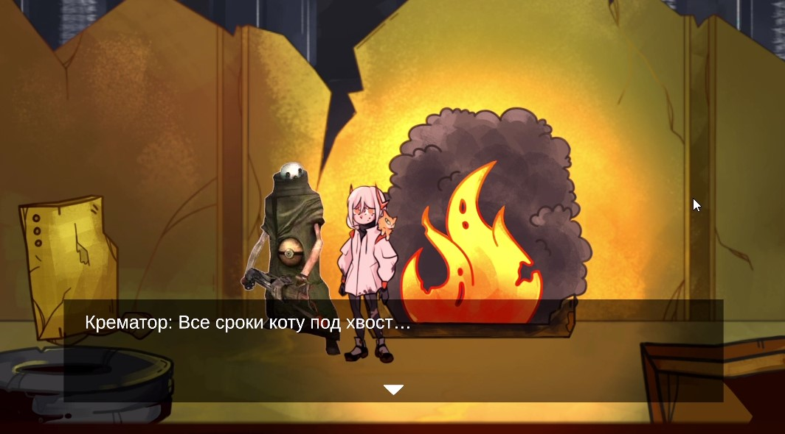

Реализована сложная система ветвящихся диалогов с вариантами ответов. Каждый выбор влияет на отношения с персонажами и концовку игры.

Последние новости и этапы создания игры
Реализована сложная система ветвящихся диалогов с вариантами ответов. Каждый выбор влияет на отношения с персонажами и концовку игры.
Наши художники завершили работу над концептами основных локаций. Представляем галерею эскизов киберпанк-города.


В рамках проекта по разработке игры для ПК наша команда посетила мероприятие "Карьерный марафон" в Московском Политехе. Это событие собрало множество IT-компаний, что предоставило уникальную возможность для студентов ознакомиться с цифровым рынком и потенциальными инвесторами.
"Карьерный марафон стал важным шагом в развитии нашего проекта. Мы получили ценные советы по улучшению игры и установили контакты с потенциальными инвесторами."